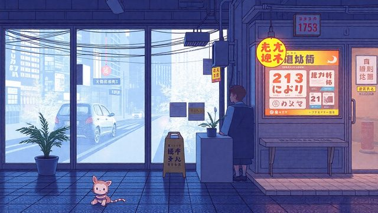
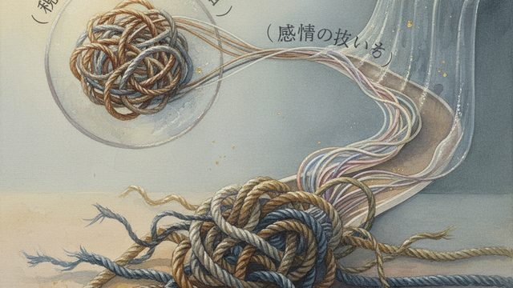
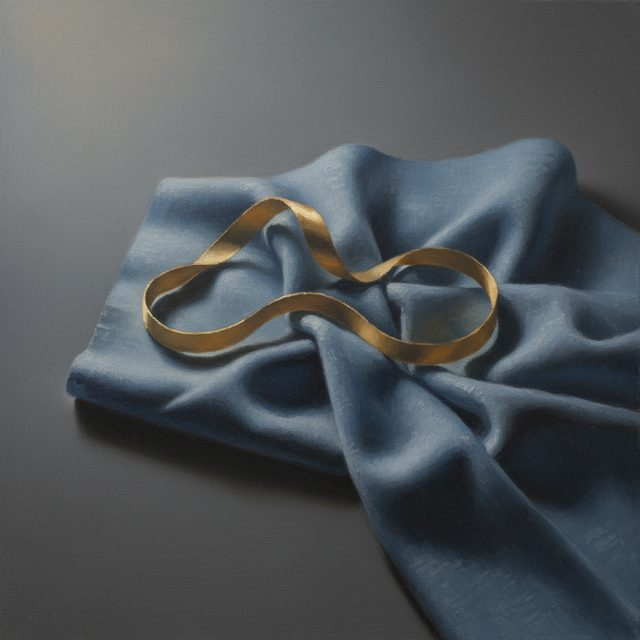
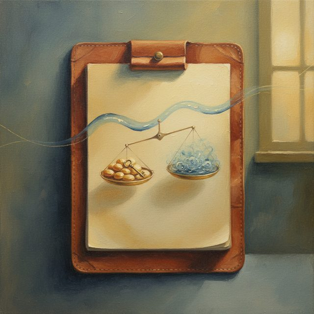
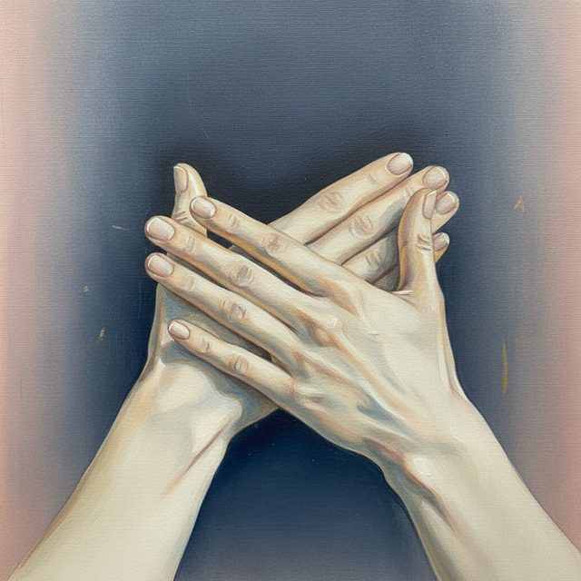
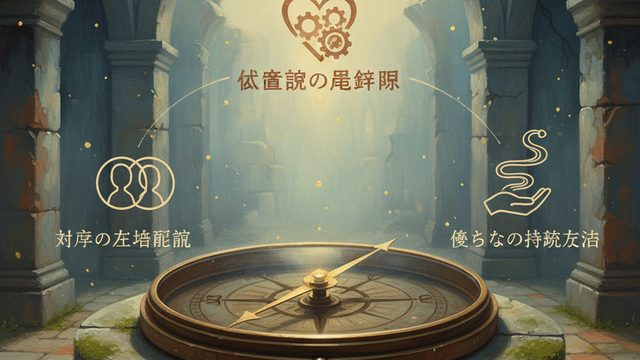
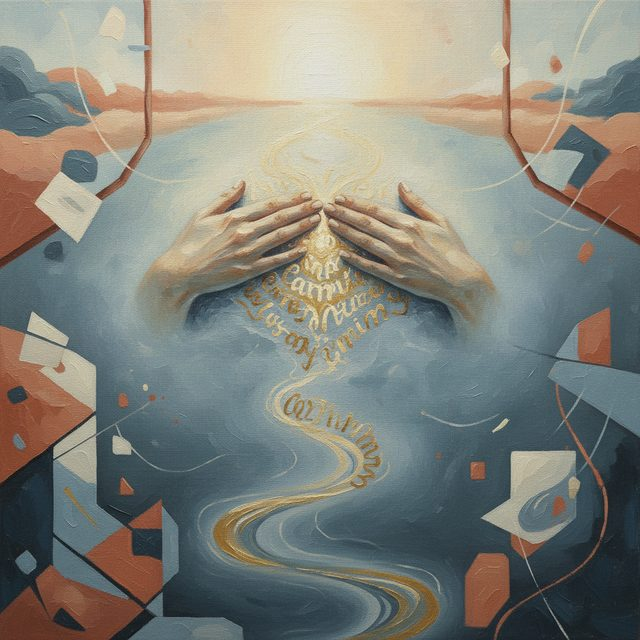
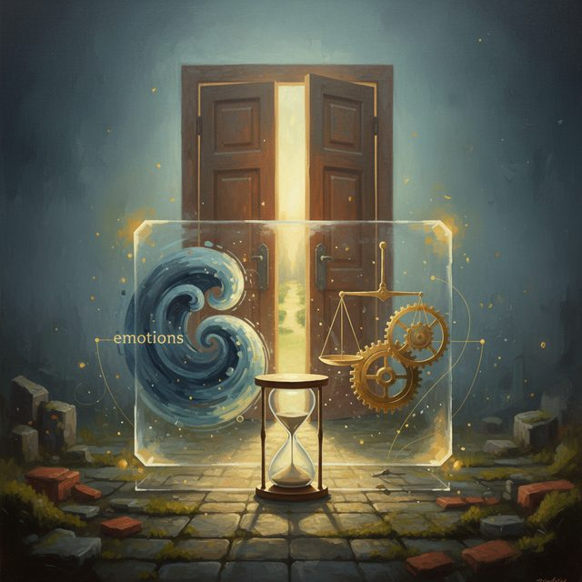
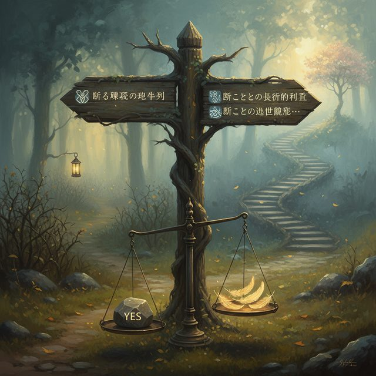

CH02-077 — images
【断れない束縛】頼られる快感の代償
ep
CH02
Script Viewer
snapshot
guide
台本
音声
サムネ
画像
CH02-077
画像
updated_at: 2026-01-13T09:30:14.308996Z
run_id:
CH02-077_regen_20260105_175814

CH02-077
予定・タスク

CH02-077
言葉・気持
CH02-077
範囲・信頼
CH02-077
余力・大切
CH02-077
時間・言葉
CH02-077
境界・言葉
CH02-077
相手・背負
CH02-077
敬意・選択

CH02-077
自己主張・攻撃
CH02-077
健全・時間
CH02-077
事実・状況
CH02-077
練習・勧誘
CH02-077
記憶・言葉
CH02-077
優先順位・最優先

CH02-077
返事・保留
CH02-077
事実・相手
CH02-077
役割・相手
CH02-077
余裕・集中
CH02-077
言葉・馴染
CH02-077
フォロー・時間
CH02-077
説明・謝罪
CH02-077
記憶・理由

CH02-077
価値観・無理
CH02-077
相手・立場

CH02-077
呼吸・余裕
CH02-077
場面・時間
CH02-077
境界・報酬

CH02-077
環境・共有
CH02-077
時間・感情

CH02-077
時間・練習

CH02-077
価値観・言葉
CH02-077
境界・一緒
CH02-077
場面・余裕
CH02-077
境界・筋肉